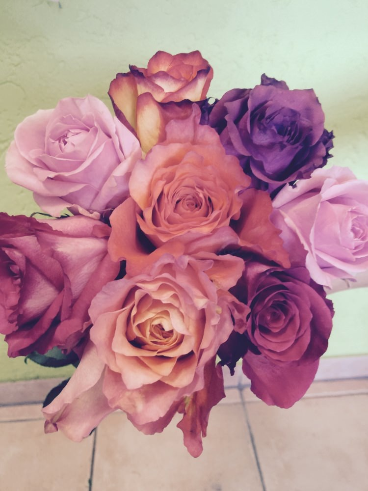
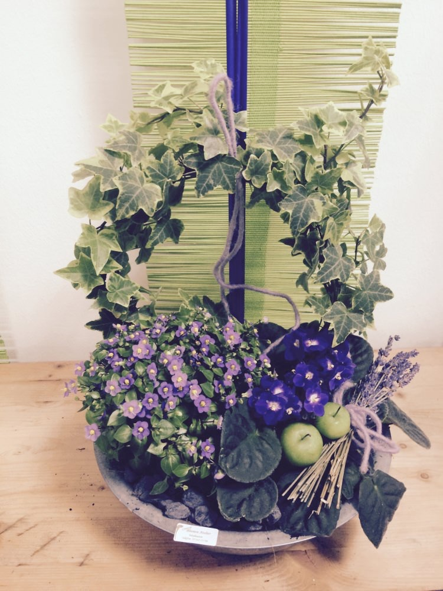

Angebot
Blumen sprechen lassen
Blumen sind immer ein schönes Geschenk und zu vielen Anlässen gern gesehen — sie vermitteln eine besondere Stimmung und Emotionen.

Festliche Gestecke
Für Hochzeit, Trauer und jede Feier.
Wir bieten Ihnen in unserem Blumenfachgeschäft neben Hochzeits- und Trauerfloristik auch Blumen und Gestecke für Familienfeiern wie beispielsweise Jubiläen, Taufen und sonstige kirchliche Feste. Weil wir mit der Natur arbeiten, achten wir auf besonders saisonalen Blumenschmuck — und erfüllen dennoch all Ihre Wünsche.
- Hochzeitsdekoration
- Brautsträuße
- Trauerkränze
- Trauergestecke und -sträuße
- Saal- und Kirchendekoration

Romantische Überraschung
Lassen Sie Blumen sprechen.
Sie möchten der Dame Ihres Herzens ein Geschenk machen? Überraschen Sie sie doch mit einem spontanen Blumenstrauß! Drücken Sie Ihre Zuneigung mit hübschen Rosen, Lilien oder anderen Blumen aus.
Bestellen Sie per Telefon unter +49 5362 71746 oder schreiben Sie uns eine E-Mail.

Offizielle Anlässe
Für Büro, Firmenfeier und Geschäftspartner.
Für Ihre Firmenfeiern oder die Ausstattung Ihres Büros stellen wir die passende Dekoration bereit. Auch Ihre Kunden freuen sich über eine Aufmerksamkeit: Bei uns können Sie zu Geburtstagen Ihrer Geschäftspartner oder für sonstige Anlässe wunderschöne Blumensträuße bestellen.
Kommen Sie vorbei oder nehmen Sie Kontakt auf — gerne stellen wir Ihnen ein individuelles Blumenarrangement zusammen.